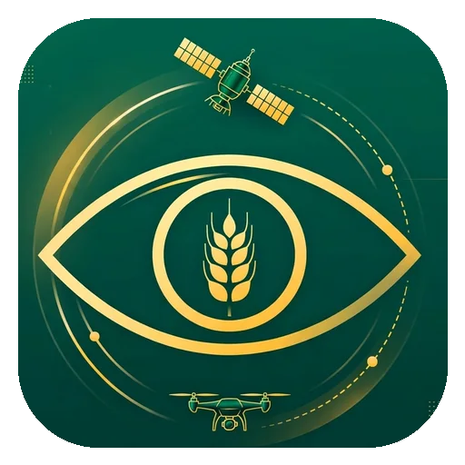
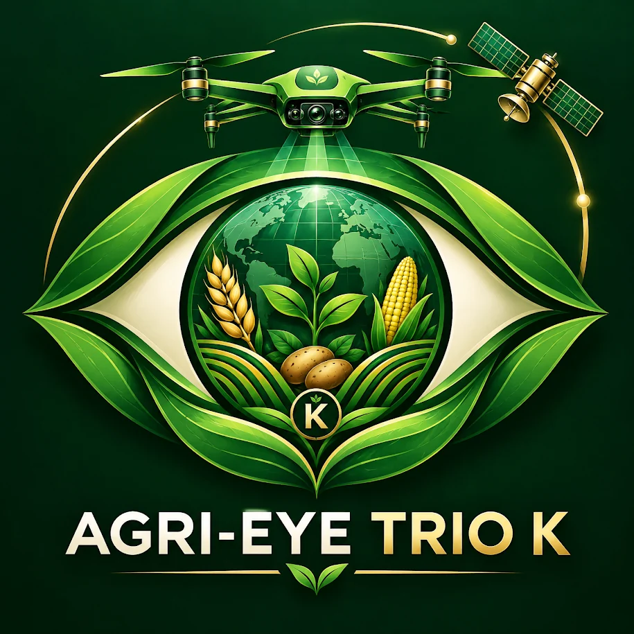
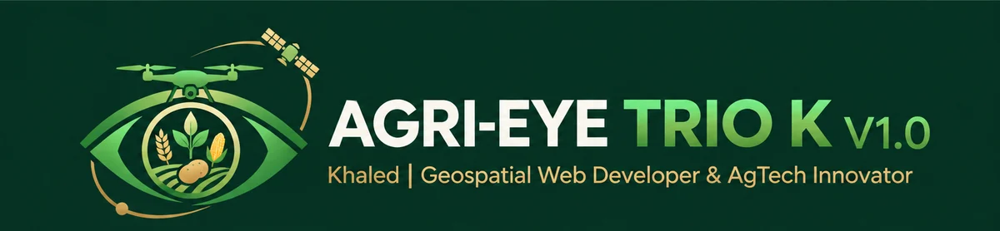

01 / ANALYSIS WORKSPACE
Field analysis dashboard
Map view, spatial indicators and summary metrics in one workspace.


AGRI-EYE TRIO KTake a closer look at mapping, analysis layers and reporting tools connecting satellite screening with drone-based field workflows.
Browse screenshots ↓
A dedicated space for the AGRI-EYE TRIO K product walkthrough.
Landscape screenshots show examples of the application workspace and analysis views.
Map view, spatial indicators and summary metrics in one workspace.
Crop selection and core analysis controls.
Explore the map-first approach to agricultural monitoring.
Soil-oriented screening within a broader field assessment.
Remote-sensing indicators work best alongside field observations.
Seasonal crop condition and field variability provide analysis context.
Explore how the platform organizes crop-oriented screening workflows.